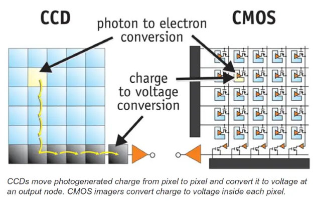

光电转换过程
- ▸光子撞击传感器产生电子
- ▸电荷累积形成模拟信号
- ▸ADC转换为数字图像数据
CCD传感器特点
- ▸逐像素电荷转移
- ▸图像质量优异
- ▸功耗较高
CMOS传感器优势
- ▸每像素独立放大器
- ▸低功耗设计
- ▸集成度高

Photoelectric Conversion
- ▸Photons strike sensor generating electrons
- ▸Charge accumulation forms analog signals
- ▸ADC converts to digital image data
CCD Sensor Features
- ▸Pixel-by-pixel charge transfer
- ▸Excellent image quality
- ▸Higher power consumption
CMOS Sensor Advantages
- ▸Individual amplifier per pixel
- ▸Low power design
- ▸High integration level